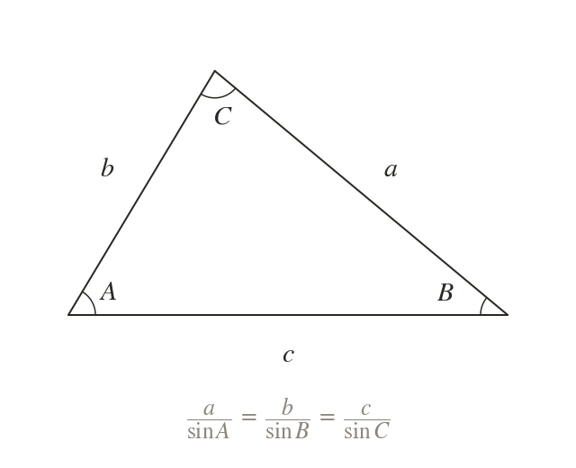
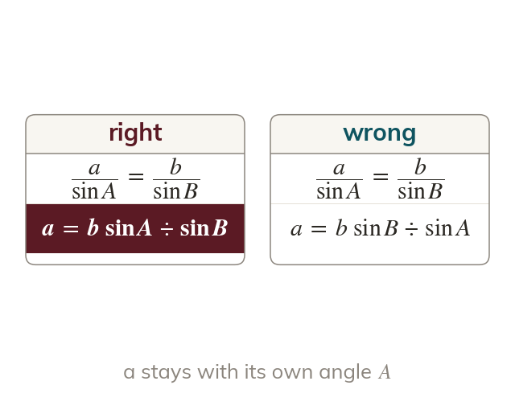
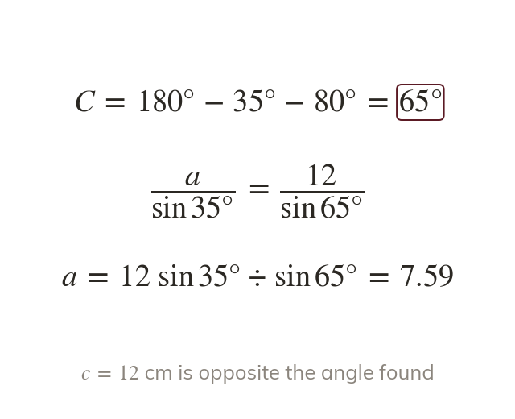
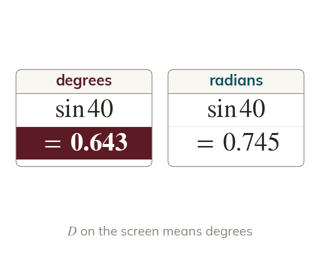

Each side faces an angle
Side a lies opposite angle . Each side over the sine of its opposite angle gives one value.
Most triangles in surveying and navigation have no right angle, so SOH CAH TOA cannot be used. Today we use the sine rule to find a missing side in any triangle.
Work down the page at your own pace. Write every answer in your book first, then click to check it.
Read each card, then follow the worked examples one step at a time.

Side a lies opposite angle . Each side over the sine of its opposite angle gives one value.

To find a side, write the rule with sides on top. Then multiply by the sine under the unknown.
Pick an answer. If it's wrong, the feedback tells you which mistake it was.
Read each card, then follow the worked examples one step at a time.

The sine rule needs a complete pair. When the given side's angle is missing, find it from the angle sum.

A calculator in radians gives wrong sines. Check for on the screen before you start.
Pick an answer. If it's wrong, the feedback tells you which mistake it was.
Finished? Next lesson: 11H.2.3 The Sine Rule for Angles.
For each skill, tap the one that is true for you today. Your Revise pages start with anything you mark Not yet.
Your ratings are saved on this device only.
Log in, then search for a code to practise that skill.
Videos, worksheets and more on each part of this lesson.